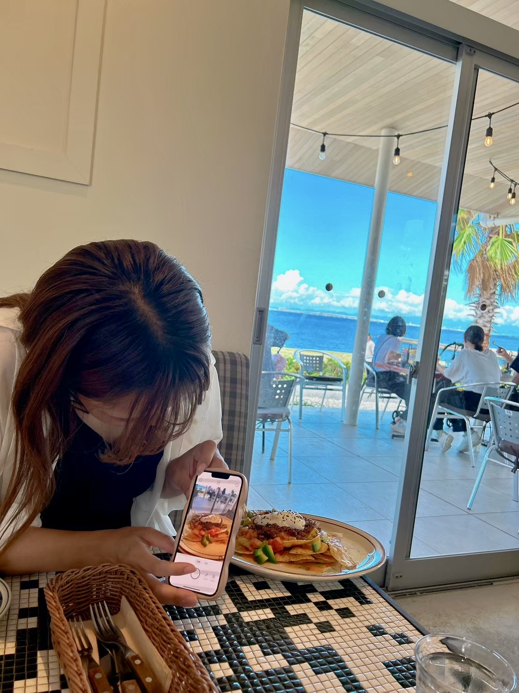
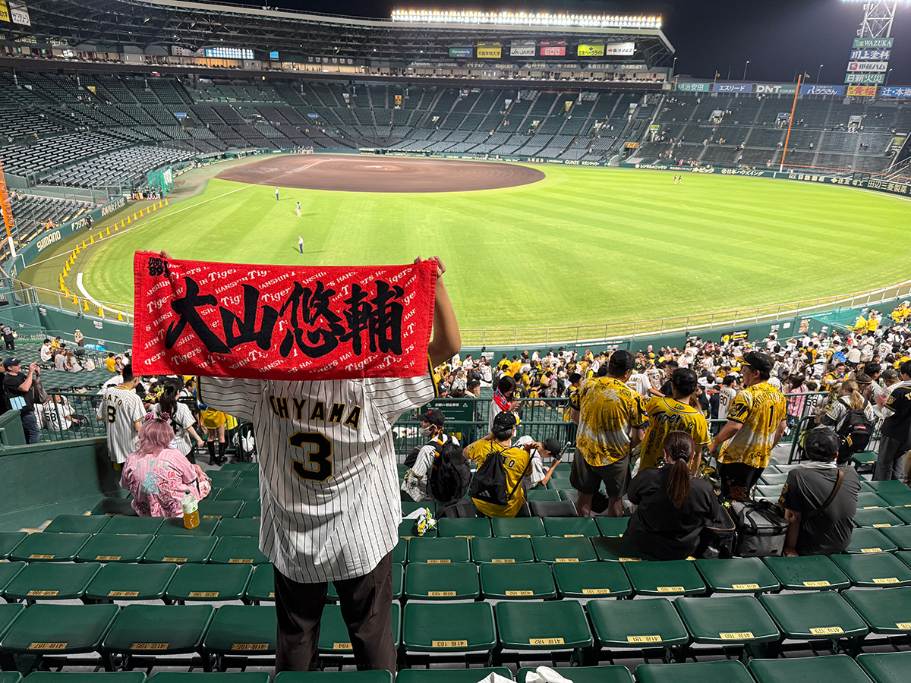
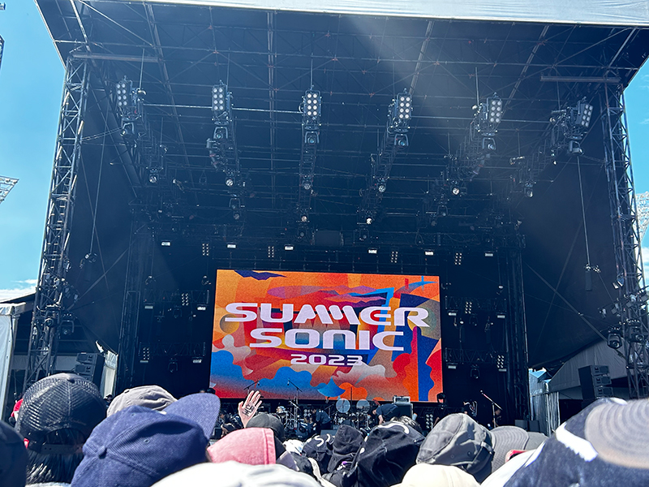
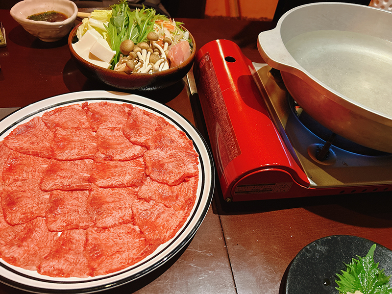

わたしのこと。
About Me

細羽 妃佳留
1992年生まれ。兵庫県神戸市出身。
高校3年生のときに妊娠・出産。現在は、アイドルを目指す高校生（長男）と毎日遊んで暮らしたい中学生（次男）の3人でにぎやかに暮らしています。
「一度きりの人生、好きなことを仕事にしたい！」という思いで、営業事務として勤めていた会社を2022年に退社。5ヶ月間スクールに通い、Webデザイナーへと転身しました。
現職では、Webデザインだけでなく、ECサイトの企画・開発や新規事業のブランディング、社内の業務改善アプリの設計まで幅広く経験。見た目の美しさだけでなく、ユーザーの使いやすさにもこだわり、わくわくするようなデザインを心がけています。
趣味は音楽、ライブ、プロ野球観戦。頑張っている人たちを応援することが好き！
大切にしていること。
Philosophy
多角的な視点と根拠
見た目の美しさだけでなく、「誰がどう使うか」「どう興味を惹くか」「ユーザーが使いやすいか」を考えます。クライアントの意図とユーザー体験の両立を追求します。
課題に向き合うデザイン思考
何が一番の課題なのかを見つけ出し、「どうすれば解決できるか」を考え、アイデアを形にします。ただ作るだけでなく、課題の発見から解決まで粘り強くやりきります。
変化を楽しむ探究心
トレンドや新しいものにアンテナを張り、Web制作にも活かしています。プライベートの趣味の時間もインプットにつながっています。
できること。
Skills & Tools
好きなこと。
Personal Likes

01. SPORTS
プロ野球観戦
打った瞬間も、ピンチを乗り切った回も、息子たちと一緒に大はしゃぎ！選手たちが活躍する姿を見て元気をチャージしています。

02. MUSIC
音楽・ライブ
アイドルからバンドまで、好きな音楽を全身で感じられるライブが大好き！歌やダンスを見ることが1番の趣味◎

03. FOOD
美味しいものを食べる
お気に入りのお店を開拓することが休日の楽しみ。美味しいごはん屋さんも、パン屋さん巡りも、私のリフレッシュタイム。